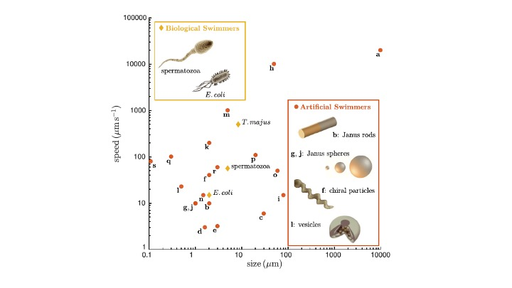
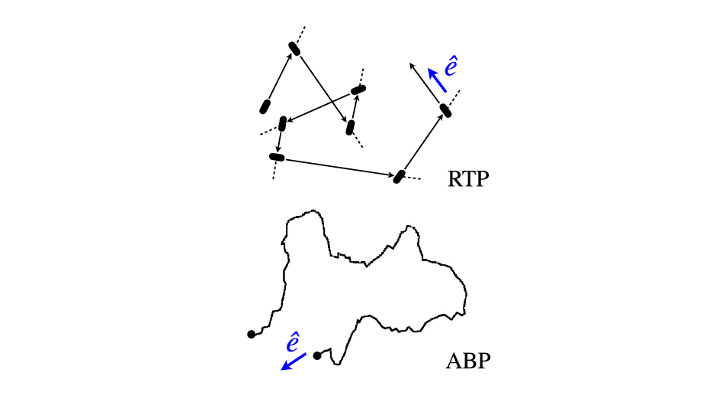
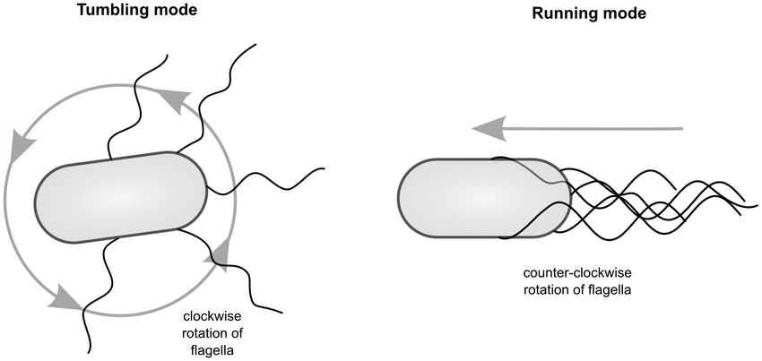
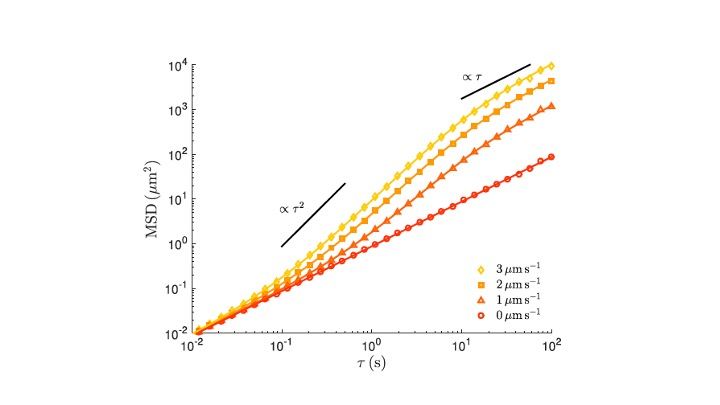
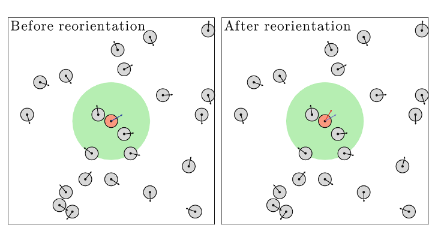
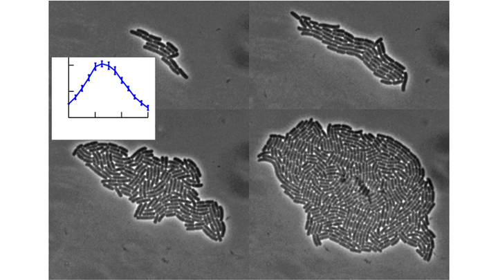
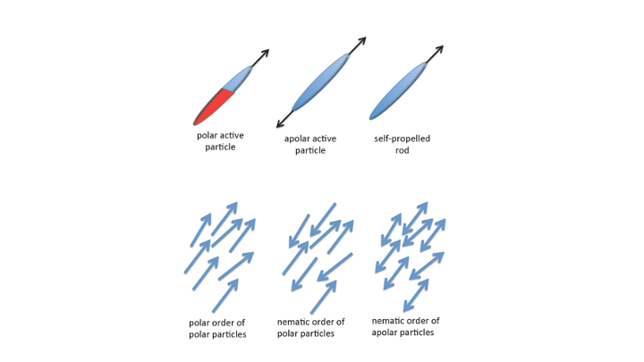
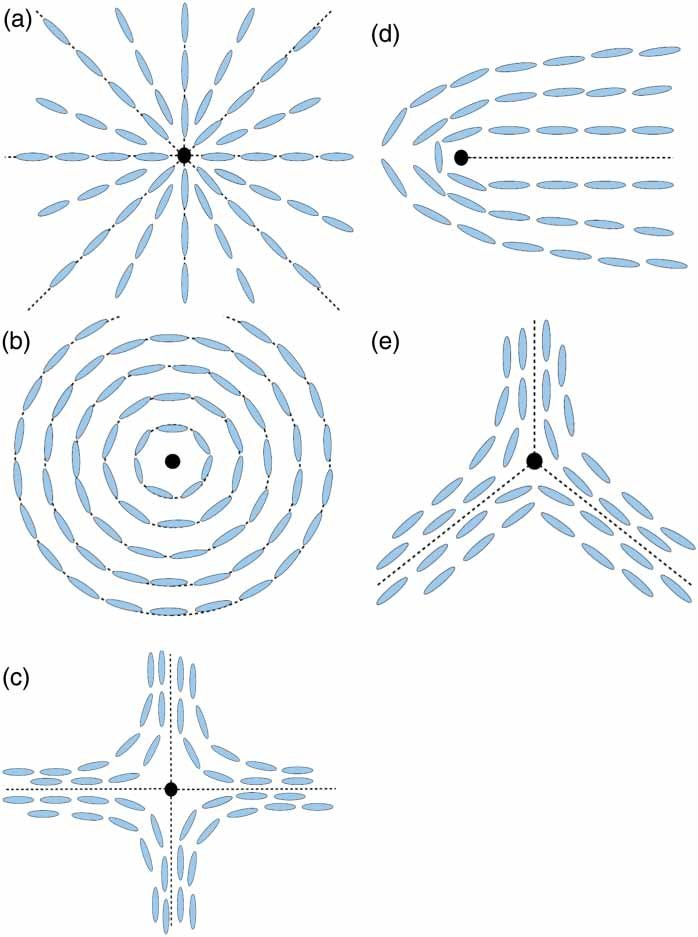
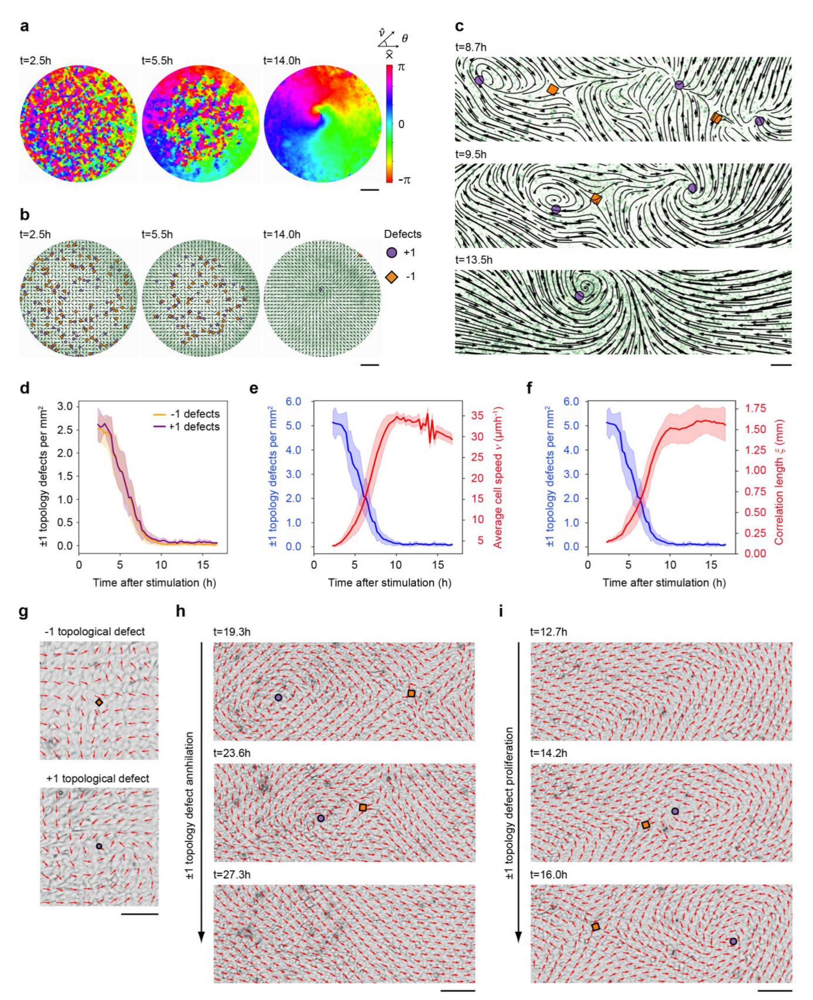

Active matter: lecture notes
What is active matter?
- Active matter systems consume energy from their environment and use it as fuel to propel themselves and drive themselves far from equilibrium. Examples: living organisms and artificial machines (micro-robots, artificial molecular machines, etc.).
- Because of their intrinsic activity, these systems can spontaneously show complex patterns of motion, such as swarming or flocking. This is associated with an emergent global order from the self-organization of the constituents of active matter.
- Emergent (self-organized) behaviour occurs at many different scales. Some of these patterns turn out to be robust and universal: they are independent of the type of animal that makes up the swarm.
Examples of living active matter
E. coli swarming
Cell migration
- We can model the universal swarming behaviour of self-propelled (active) particles with several minimal statistical models.
- In this lecture we introduce a few minimal models of active particles. If we get to it, we will also discuss different kinds of order (polar versus nematic) that emerge from collective interactions of active particles.
Single active particles: self-propelled Brownians
- Self-propulsion is common in living organisms. It allows a more efficient exploration of the environment when looking for nutrients or running away from toxic substances.
- A paradigmatic example is the swimming of bacteria such as E. coli. It resembles the motion of a passive Brownian particle, but it also has an active component due to self-propulsion.
- We call them self-propelled Brownians, because they meander but also propel themselves by taking up energy from their environment and converting it into directed motion.
- Self-propelled Brownians = random meandering + active swimming


Active Brownian particles
This is like an overdamped (no inertia) Brownian particle with two kinds of motion:
- random meandering like a passive Brownian particle, with a noise amplitude set by the translational diffusivity \(D_T\);
- self-propulsion with a constant speed \(v\), but in a random direction \(\theta\). The randomness in the orientation of the self-propulsion has a noise amplitude set by the rotational diffusivity \(D_R\).
For motion confined to the \(xy\)-plane, the active Brownian particle is modelled by 3 dynamical variables \((x(t),y(t),\theta(t))\): its position and the angle of the self-propulsion velocity. The dynamical equations for these variables are
\[ \begin{aligned} \dot x &= v\cos\theta +\sqrt{2D_T}\,\xi_x, \quad \langle\xi_x\rangle = 0,\quad \langle\xi_x(t)\xi_x(t')\rangle =\delta(t-t')\\ \dot y &= v\sin\theta +\sqrt{2D_T}\,\xi_y, \quad \langle\xi_y\rangle = 0,\quad \langle\xi_y(t)\xi_y(t')\rangle =\delta(t-t')\\ \dot \theta &= \sqrt{2D_R}\,\xi_\theta, \quad \langle\xi_\theta\rangle = 0,\quad \langle\xi_\theta(t)\xi_\theta(t')\rangle =\delta(t-t') \end{aligned} \tag{1}\]
Overdamped motion
We can rewrite the equations of motion in vector form. Then it becomes clearer that this is overdamped motion, with drag coefficient \(\gamma\):
\[ \gamma\dot{\mathbf r} = F\hat{\mathbf e} +\boldsymbol{\xi} \]
Finite-difference equations
These equations are usually solved numerically in discrete time, with \(\Delta t\) the time increment between successive times, \(t_{n+1} = t_n+\Delta t\). The corresponding finite-difference equations are
\[ \begin{aligned} x_{n+1} &= x_n+v\cos\theta_n\Delta t+\sqrt{2D_T \Delta t}\,W_{x,n}\\ y_{n+1} &= y_n+v\sin\theta_n\Delta t+\sqrt{2D_T \Delta t}\,W_{y,n}\\ \theta_{n+1} &= \theta_n+\sqrt{2D_R \Delta t}\,W_{\theta,n} \end{aligned} \tag{2}\]
where \(W_{x}, W_{y}, W_\theta\) are Gaussian random numbers with zero mean and unit standard deviation, drawn independently at each time step.
Run-and-tumble
The run-and-tumble model was inspired by chemotaxis of bacteria, that is, how bacteria move towards or away from a food source.

The particle alternates between an active state, where it moves with constant speed \(v\) in a given direction (“run”), and a passive state, where its position stays the same but its orientation keeps changing (“tumble”). The change in direction is taken as instantaneous and occurs with a given rate \(\lambda/\Delta t\), so that the particle moves along a straight line between successive tumbles. The “run” state is punctuated at random times by an instantaneous “tumble” (reorientation). This is modelled as a Poisson point process, characterised by the Poisson distribution
\[ P_\lambda(n) = \frac{\lambda^n}{n!}e^{-\lambda}, \]
where \(n= 0,1,2,\ldots\) is the number of tumbling events observed in a time interval \(\Delta t\), and \(\lambda\) is the average number of tumbling events expected in \(\Delta t\).
Notice that \(P(n=0) = e^{-\lambda}\) is the probability of no tumbling in a time interval \(\Delta t\). We therefore introduce the probability of tumbling in a time interval \(\Delta t\) as \(P_{\rm tumble} = 1-e^{-\lambda}\), and the probability of running as \(P_{\rm run} = P(n=0) = e^{-\lambda}\).
Now we can model the motion of a single bacterium in the plane with 4 dynamical variables \((x,y,\theta,\rho)\). The additional variable \(\rho\) keeps track of the state of the bacterium (1: run, 0: tumble).
The finite-difference evolution equations for these variables are
\[ \begin{aligned} x_{n+1}&= x_n+\rho_n v\cos\theta_n \Delta t+\sqrt{2D_T \Delta t}\,W_{x,n}\\ y_{n+1}&= y_n+\rho_n v\sin\theta_n \Delta t+\sqrt{2D_T \Delta t}\,W_{y,n}\\ \theta_{n+1}&= \theta_n+(1-\rho_n)\Delta \theta_n\\ \rho_{n+1} &= \begin{cases} 0 & \text{with probability } 1-e^{-\lambda} \\ 1 & \text{with probability } e^{-\lambda} \end{cases} \end{aligned} \tag{3}\]
where \(W_{x}, W_{y}\) are Gaussian random numbers with zero mean and unit standard deviation, drawn independently at each time step, and \(\Delta\theta_n\) is the random reorientation during a tumble.
Diffusive behaviour of self-propelled Brownians
Let us introduce the characteristic time scale of rotational diffusion (meandering), \(\tau_R = 1/D_R\). \(D_R\) has units rad²/s, and since the radian is dimensionless, \(\tau_R\) is a time and \(v^2\tau_R\) has the units of a diffusion coefficient. On time scales much longer than \(\tau_R\), the self-propelled Brownian particle diffuses with an effective diffusivity that is larger than the thermal diffusivity:
\[ D_{\rm eff} = D_T+ \frac{v^2\tau_R}{2} \tag{4}\]

\[ \begin{aligned} \langle(\Delta r)^2\rangle (t)&= \langle(\Delta x)^2\rangle(t)+\langle(\Delta y)^2\rangle(t)\\ \langle(\Delta r)^2\rangle (t)&= \begin{cases} 4D_T t+v^2t^2, & t\ll \tau_R\\ (4D_T +2v^2\tau_R)\,t, & t\gg \tau_R \end{cases} \end{aligned} \tag{5}\]
The effective diffusion coefficient is
\[ D_{\rm eff}= \lim_{t\rightarrow\infty}\frac{\langle|\Delta r|^2\rangle}{4t} = D_T+\frac{v^2 \tau_R}{2} \]
Interacting self-propelled Brownians: the Vicsek model for swarming
Vicsek et al. (1995) published a minimal model for flocking due to alignment interactions between neighbouring particles.
For simplicity, consider active particles moving in the plane. Each of them is described by its coordinates \((x^{(i)}, y^{(i)})\) and its orientation of motion \(\theta^{(i)}\), where \(i\) is the particle label.

Finite-difference equations
The finite-difference evolution equations for particle \(i\) are
\[ \begin{aligned} x_{n+1}^{(i)} &= x_n^{(i)}+v\cos\theta^{(i)}_n\Delta t\\ y_{n+1}^{(i)} &= y_n^{(i)}+v\sin\theta^{(i)}_n\Delta t\\ \theta_{n+1}^{(i)} &= \langle\theta_n^{(j)}\rangle_{S_i}+\sqrt{2D_R\Delta t}\, W_{\theta^{(i)},n} \end{aligned} \tag{6}\]
where \(\langle\theta_n^{(j)}\rangle_{S_i}\) is the average orientation of all the active particles in the neighbourhood \(S_i\) of the \(i\)-th particle (see the illustration above). In the original paper the noise is uniform, \(\eta\,U(-\pi,\pi)\); the code we use in the lab follows the paper.
Numerical examples showing the emergence of polar order (flocking)
Vicsek model with interaction radius \(R_1 = 0.1 L\) and higher noise.
Vicsek model with a larger interaction radius \(R_2 = 0.2 L\) and higher noise.
Vicsek model with \(R_1\) and lower noise.
Vicsek model with \(R_2\) and higher noise.
Emergent nematic order in bacterial colonies
Bacteria are elongated particles with rod-like shapes. When they are closely packed, they tend to align their principal axes along a preferred orientation. In doing so, they break rotational symmetry (all directions equally accessible) and form an ordered state with a preferred orientation. This is called nematic order.

Nematic order is commonly found in passive systems known as liquid crystals. By analogy, active matter with nematic order is often called an active liquid crystal.
Polar versus nematic order:

Polar ordering of epithelial cell layers
Epithelial cells
From Wikipedia: a thin, continuous, protective layer of compactly packed cells with little intercellular matrix. Epithelial tissues line the outer surfaces of organs and blood vessels throughout the body, as well as the inner surfaces of cavities in many internal organs.


Topological defects

Flow and polar ordering
Integer topological defect annihilations drive polar ordering of epithelial monolayers, Emma Lång, Anna Lång, Pernille Blicher, Torbjørn Rognes, Paul Dommersnes, Stig Ove Bøe.

- a: Time evolution of polar ordering. The colour map represents the angle of the local velocity field relative to the \(x\)-axis. The surface of a whole circular monolayer is shown. Scale bar, 1 mm.
- b: Detection and mapping of ±1 topological defects.
- h: Time series showing annihilation of a ±1 topological defect pair. Scale bar, 100 µm.
Active elastic solid model
\[ \begin{aligned} \dot{\mathbf R}_i&=V_c\mathbf P_i+\frac{1}{\xi}\mathbf F_i\\ \dot{\mathbf P}_i&=\gamma(\mathbf P_i\times\dot{\mathbf R}_i)\times\mathbf P_i \end{aligned} \tag{7}\]
Here \(\mathbf R_i\) is the position of cell \(i\) and \(\mathbf P_i\) the polarity of cell propulsion (the direction of propulsion). \(V_c\) is the cell propulsion speed in the absence of elastic forces, \(\mathbf F_i\) the elastic force on the cell, and \(\xi\) the substrate friction. The first equation expresses the balance of forces. The second gives the polar ordering effect: the direction of propulsion turns towards the direction of motion with rate constant \(\gamma\).
Suggested further reading
- Integer topological defect annihilations drive polar ordering of epithelial monolayers, Emma Lång, Anna Lång, Pernille Blicher, Torbjørn Rognes, Paul Dommersnes, Stig Ove Bøe.
- The statistical physics of active matter: from self-catalytic colloids to living cells (2018), Étienne Fodor and M. Cristina Marchetti.
- The mechanics and statistics of active matter (2010), Sriram Ramaswamy.